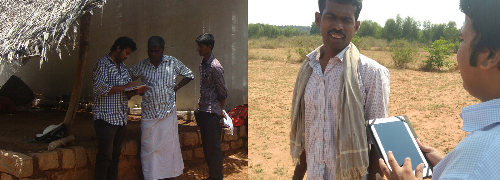
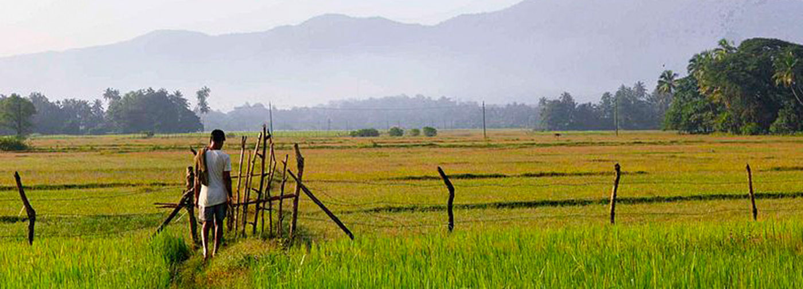

Socio-Economic Survey of Sujala Micro-watersheds in Karnataka
World Bank funded KWDP II, SUJALA III, Support for Improved Program Integration in Rainfed Areas


World Bank funded KWDP II, SUJALA III, "Support for Improved Program Integration in Rainfed Areas" implemented with Broad objective of demonstrating more effective watershed management through greater integration of programmes related to rain-fed agriculture, innovative and science based approaches and strengthen institutional capacities and If it is successful, it is expected that the systems and tools could be mainstreamed into the overall IWMP in the State of Karnataka and in time, throughout other IWMP operations in India.
Objectives
- To understand the demographic features of the households in the micro-watershed
- To understand the extent of family labour available, additional employment opportunities availability within the village.
- To know the status of assets and liabilities of different categories of HHs in the micro-watershed for suggesting possible improvements.
- To know the cropping pattern, cropping intensity and productivity levels of different HHs in MWSs.
- To know the type and extent of livestock owned by different categories of HHs , status of availability of fodders and level of management of livestock.
- To know the economics of different enterprises taken by the HHs in MWS.
- To understand institutions functioning in the MWSs and accessibility to Common property Resources (CPRs).
- To know the marketing infrastructure available for purchase of inputs and sale of produce in MWs.
- To understand existing programmes/schemes in operation from various development departments for convergence of SUJALA-III with other departments.
- To know the status of landless HHs and livelihood options for them in watershed development programme.
- To know the additional investment capacity of different category of households for undertaking additional improvements.
- To understand the knowledge level of HHs about watershed development activities.